大方廣圓覺修多羅了義經夾頌集解講義
辨音菩薩章
四明聰講師曰。淨名云。三轉法輪於大千。其輪本來常清淨。天人得道。此為證三寶於是現世間。又云。佛以一音演說法眾生隨類各得解。佛不出世梵音自何而聞。既無聞以何法修。既無脩如何有證。證者可出三界火宅之苦。辨音已離。苦人若不度生非菩薩心也。是以吾佛示勸證三轉法輪。雖一音舉暢。其間隨類各解。不同辨音。且於圓覺門。問幾種修習勞吾大覺。括盡生死。結根修證病源。將三種妙藥。互換湯事。總二十五種。若無心人。則二十五皆屬剩法。既未離膏肓。聖賢欲垂救藥。故有此章進問也。
於是。辨音菩薩。在大眾中。即從坐起。頂禮佛足。右遶三匝。長跨叉手。而白佛言。
西蜀復菴暉禪師曰。我佛以一音。逗於萬類。其所說法者。說一乘法。而眾生心地差別之故。逐見佛所說之法。各各不同。如娑竭龍王一念降雨。於一切處所見不同。若大海中見雨清淨水。名為無斷絕。他化天。雨簫笛及種種音樂。名為美妙。化樂天。雨大摩尼珠。名為放大光明。兜率天。雨大莊嚴具。名為垂髻。夜摩天。雨眾妙香。名為悅意。四天王。雨天寶衣。名為覆蓋。龍王宮。雨赤直珠。名為涌出光明。阿脩羅宮。雨諸兵伏。名為降伏怨敵。北鬱單越。雨種種華。名為開敷。以龍王一味之雨。各隨諸天所感不同。今佛亦然。但說一乘之法。若聲聞在座之時。其所聽者。乃是四諦法。若緣覺在座之時。其所聽者。乃十二因緣法。若菩薩在座之時。其所聽者。乃六度萬行法。然諸文。但說一心法門。隨眾生所聞時。有差別。今前門。雖統明三觀。而隨機單複不同。故二十五輪各有證入。此菩薩善能辨別隨類圓音故。當其問也。
大悲世尊。如是法門。甚為希有。
世尊此諸方便。
一切菩薩。於圓覺門有幾修習。
修證圓覺觀門。共有幾種修習。
西蜀復庵暉禪師曰。此請法也。此諸方便者。即指前三觀。於圓覺者。指前所依了悟覺性之行本也。有幾修習者。謂前威德章中。蒙佛開示。三觀行相。分明並已知了。尚未審。諸菩薩所修。為復是一人。具修三觀為復是三人。各修一觀為前修。為後修。為同時修。為不同時修。為依次第。為超次第。故云有幾修習也。意問威德章中三觀如何而修矣。
願為大眾及末世眾生。方便開示。令悟實相。
圓覺空性。無一切相。故曰實相。
作是語已。五體投地。如是三請。終而復始。爾時世尊。告辨音菩薩言。善哉善哉。善男子。汝等乃能為諸大眾。及末世眾生。問於如來如是修習。汝今諦聽。當為汝說。時辨音菩薩。奉教歡喜。及諸大眾。默然而聽。
善男子。一切如來。圓覺清淨。本無修習。及修習者。
一切菩薩。及末世眾生。依於未覺幻力修習。
因未覺悟之故。以諸幻力。修習圓覺。
爾時。便有二十五種清淨定輪。
二十五輪者。即奢摩他。三摩鉢提。禪那之三觀。或單修。或濟修。或先修。或終修。或複修。或圓修。共有二十五種名也。曰清淨定輪者。蓋覺性無染。能轉萬法。及摧輾諸幻故也。
西蜀復庵暉禪師曰。此答文舉意標數也。一切如來者。即指三世諸佛。與十方諸佛。廣大靈明圓覺清淨體上。本無所修之法。亦無能修之人。既然。無修無證。因甚諸教所說。一切菩薩。及末代眾生。又有修有證耶。良由於本覺上。一念不覺。迷真背湛。喪本受輪。以諸佛所說者。但依本覺故。說有幻力修習。遂有修有證。此之修習。以被機之故。便有二十五種清淨定輪。輪有摧碾義。謂能摧惑障。令正智轉。故名為輪。言二十五輪者。且初三觀。單修次三七二十一輪交絡。複修後一輪。圓修三觀。慤法師疏中。於二十五觀。約喻各立一名。而圭峯疏中。全用之。以管經文。令行相顯著。
四明聰講師曰。於是辨音菩薩。至終而復始者。辨音因聞威德問三觀義且只就三種根性。釋尊開示。亦是隨所問而言之。若論機。有淺深。根有利鈍。何止於三。故得辨音再問幾種修習。
爾時世尊至清淨定輪者。若論覺性。本自圓融。一切如來。修顯清淨圓極之理無高下。無修習及修習者。能所俱絕佛不度生。大聖慈悲隆重。觀眾生心。具如來藏性。泊沒時長故。特開方便門。示圓覺性。故尼犍經云。王名嚴熾。有大菩薩。遮來入其國。王出遠迎。乃為王說。大王當知。依煩惱身。觀如來身。何以故。此身即是如來藏故。一切煩惱諸垢藏中佛性滿足。如石中玉。木中火。地中水。乳中酪。麻中油。子中禾。藏中金。模中像。孕中胎。雲中日。是故我言煩惱之中有如來藏。今佛方便。欲示眾生種種藏性。廣開無量。今處中。且示二十五種單修複修。具足修。但事不過三。不出只是三。止三觀三諦三境。根有利鈍。觀有淺深。或一或二。或三諸輪綺互。若天主三目。如梵伊三點。今先出三止三觀異同。後皆易曉。一止有二種。大止小止。小三止者。一止息止。從破惑得名。二停止止。從能定得名。三不止止。從諦理得名。此出小乘經。大三止者。此是天台智者。影傍三觀立此三名。一軆真止。破見思惑證真諦理。二方便隨緣止。破塵沙惑證俗諦理。三息二邊分別止。破無明惑證中道理。奢摩他即軆真止。凝其心安其理。即畢竟空也。三摩鉢提即方便隨緣止。雖名為定體。屬於慧法。菩薩出假化物用觀法。亦翻觀。亦翻慧義。亦歸於止也。禪那息二邊分別止。禪那翻靜慮。靜即止空也。屬即觀假也。空假不二。而修名中道也。三觀者即空假中。恢揚肇自於如來妙悟。近推於智者。於一心中宛有三用。空者破一切法。彰其蕩相也。假者立一切法。彰不壞諸法也。中者妙一切法。彰世間之相常住。荊溪云。一念無相謂之空。無法不備謂之假。不一不異謂之中。如瓔珞經敬首菩薩問。三觀法界。諸佛自性清淨道。一切菩薩所修三觀法門。中觀論云。因緣所生法。我說即是空。亦名為假名。亦名中道義。皆一心三觀之明文。今二十五輪。正為修圓覺者皆依。頓教大乘覺性而修也。
若諸菩薩。惟取極靜。由靜力故。永斷煩惱。究竟成就。
唯取奢摩他至靜一法。永斷無明。終得成就。
不起于座。便入涅槃。
即就座處便證寂滅。言其不待別法修習也。
此菩薩者。名單修奢摩他。
此乃專修靜觀。
西蜀復菴暉禪師曰。若諸菩薩等。此下二十五輪皆有標列結。亦應一一標云。悟淨圓覺以為起行所依之本。今為前觀既標列有了。今恐文繁故略不載。又此三觀行相。前已具釋了。今但要分成二十五數。被二五種機。并顯單複之相故。略去不存。今此澄渾息用觀也。此觀譬如濁水先且澄令清潔。清潔後則可於中以見於物。今修此靜觀。亦復如是。謂行人自從無量劫來。只用此無明煩惱一切業障。妄想顛倒攀緣分別之心。未曾暫歇。今既入此觀。當以定力止息調伏。勿令再起。如人執杖視牛。勿令犯人苗稼。
唯取極靜者。此明一味靜念。更不依倚形色。不依倚地水火風。及見聞覺知。良靜念沉慮之力。遂覺身心悉皆空寂。至於瞥示之念尚無。煩惱如何得有。既煩惱不起。即全是覺心。故云究竟成就。不起于座。便入涅槃者。謂不起當體法空之座。便入諸佛寂滅涅槃真如理也。
四明聰講師曰。一單修空觀。(從三觀。後七觀用空觀在前)止觀云。為昏與散翳動定明不可隨不可畏。隨之將人向惡道。畏之則妨修正行。此修圓覺者。先取極靜專用止。止即定也。無明本是法性。以迷故覆理成無明。如寒結水為氷。如眵變心起夢。今用至靜體。無明即是法性起是性起滅。是性滅不復更論倒惑起滅。以法性繫法性。以法性念法性。常是此性無非性時。體達既成。不得其真。亦不得妄。還源返本。法界俱寂。是為止。又觀無明等於法性本來皆空。乃至一切法無不即空。譬如劫盡之時。上至初禪無非是火洞然。又虗空藏所現皆空。又海慧所現一切皆水。介爾念起。所念念者。無不即空。空亦不可得。法界洞朗咸皆大明。是名為觀。觀即止。止即觀。無二無別。然心神冥昧迅利。或時止之愈馳愈散。或時觀之愈昏愈昧。敵強力弱。鷸蚌相持。進退莫可。當方便消遣。若起決定心。強軟降魔寂照自然深證。故云永斷煩惱究竟成就。從此便入登圓初住。入涅槃不生滅地。分身作佛豈小補哉。單修奢摩他者。則是單修空觀。亦乃單修體真止也。故結云名單修奢摩他。
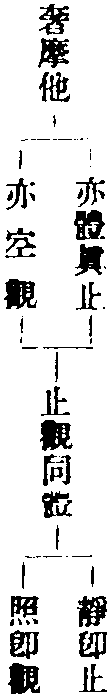
若諸菩薩。唯觀如幻。以佛力故。變化世界種種作用。備行菩薩清淨妙行。
於陀羅尼。不失寂念及諸淨慧。
此菩薩者。名單修三摩鉢提。
此乃專修幻觀。
西蜀復菴暉禪師曰。此庖丁恣刃觀也。本出莊子養生萹。彼文乃寓言。一屠者姓庖名丁。為文惠君解牛。三秊之前所見無非是牛。三年之後。不見有全牛。其殺之刀。十九年更不曾少損。有若新刃初發於硎石之上也。夫牛之百體。有離有合。有曲有直。有竅有穴。至於毫毛之末。莫不各有法界。而況解於細骨之間。獨無條理乎。且離處因而離之。合處因而合之。曲處橫而理之。直處從而通之。有竅則行。無竅則止。若夫解牛至此。則猶上解也。始動而百已判矣。尚何用力於其間哉。若然則牛已不傷。而刀復如故。蓋牛譬於物也。譬於生也。善解牛者。所解之牛雖眾。而刀初不少損。善遇物者。所遇之物雖繁。而生無不傷也。十乃陰數。九乃陽數。此見其年歲之往已久也。三秊之前見牛者。此不見道而見物也。三秊之後不見有全牛者。此見道而不見物也。夫以吾之一生。而處於無窮事變之間。苟非順性命之情以頤養之。則殘生傷性。伐德損壽。與死為隣。其能久而精神不耗。魂魄不勞乎。據莊子之意。以牛喻世上高名厚利。及榮華富貴。酒色財氣。種種虗幻不實之物。以刀喻吾之一身。以一身順萬物。凡事付之以自然。不越性分之理者。則能保養一身遠乎。患難終乎。天年盡其壽考不夭。斤斧處於中道。今經之意即不然。以牛喻萬行。以刀喻靈明觀智。喻如菩薩入此觀時。利益眾生。廣修萬行。應緣入俗。種種施為。於自己靈明觀智之上。常明明常歷歷。全超獨露初無虧缺。一念不在家之時。便是損己之智刃故。以庖丁恣刃譬之也。經言佛力。即覺悟之力。
備行菩薩清淨妙行者。即戒。廣度群品。備學法門。不失寂念者。即定也。及諸靜慧者。慧也。
四明聰講師曰。二單修假觀。唯觀如幻。幻即假法也。先證涅槃空。達空法界。建立眾生深觀。幻性即萬象森羅。達森羅性皆入幻假。為之變化世界。皆由自證覺性。謂之佛力非是果。佛加被之力為之佛力。此是自覺性。覺即佛也。自己佛力。種種作用。應遍無窮。出假化導不住大悲。行菩薩行。雖出假化利不失寂念。即用方便隨緣止。及諸靜慧者。慧即是假觀。止觀雙行。名單修三摩鉢提也。
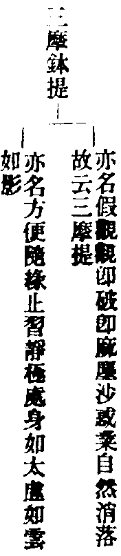
若諸菩薩。唯滅諸幻。不取作用。獨斷煩惱。煩惱斷盡。便證實相。
唯欲滅除諸幻。不取三摩鉢提之作用。獨以禪那寂觀。斷諸無明。即證圓覺無相之相也。
此菩薩者。名單修禪那。
此乃專修寂觀。
西蜀復庵暉禪師曰。呈音出礙觀。此前寂觀云如器中鍠聲出于外。殻法師疏云。如萬鈞之鏞。星樓受礙。搖杵一聲。聲振寰區。自體兼他。不能留礙。豈有樓拘。鐘相使響。不通形礙。管聲令音不透者也。
唯滅諸幻不取作用者。以諸幻境無邊。難可窮究故直云滅。滅者絕念也。作用絕為。又妨禪寂。故云不取。
獨斷煩惱者。獨者不假諸行也。此正是絕待之義。便證實相。此明但與靈心本覺相應。煩惱自無所有所斷。既空無所有處。即便自證悟。此上靜幻寂三觀乃是單修。然靜與寂何以異耶。由靜是二乘境。寂是佛境。又靜是禪定。寂是涅槃。故不同也。
次二十一輪。分為三類。類各有七輪也。第一先用靜觀為首。幻觀與寂觀兼修。乃是先修後修有二輪。先修中修後修有二輪。先修齊修後修有三輪。共成七輪。第二却用幻觀為首。靜寂兼修。亦是先修。後修有二輪。先修中修後修二輪。先修齊修後修有三輪。共成七輪。第三却用寂觀為首。靜幻兼修。如前次第也。故共成三七二十一輪。今當第一靜觀為首也。
四明聰講師曰。三單修中觀。此聖人入聖流。先滅諸幻。未說出假度生。此唯用獨存之智。圓照法界一相。無生可度。故云先滅諸幻不取作用。如龍王行雨。渠自不動作用自成中道。既息二邊空假歸中。便證實相。名單修禪那。
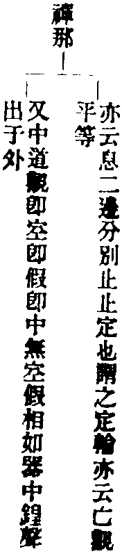
若諸菩薩。先取至靜。以靜慧心。照諸幻者。便於是中。起菩薩行。此菩薩者。名先修奢摩他。後修三摩鉢提。
西蜀復庵暉禪師曰。一運舟兼濟觀禪。謂此菩薩修定以出塵。即運舟發慧。以化物即兼濟也。
先取至靜者。標。首由至虗極守靜篤也。故此標靜觀為首。以靜慧心。從靜躡迹起行。以者運也。靜慧心者。即舟也。照諸幻者便於是中起菩薩行者。此兼修幻觀。若無靜則自居幻化。何能照幻者而度脫之。如舟自沉焉能救溺。此菩薩者名先修奢摩他後修三摩鉢提。即結名。此是先修并後修第一輪也。
四明聰講師曰。四雙修先空後假。此先用止云先取至靜止也。照諸幻者用假觀。照即觀也。空假二藥自行化他。故云起菩薩行。
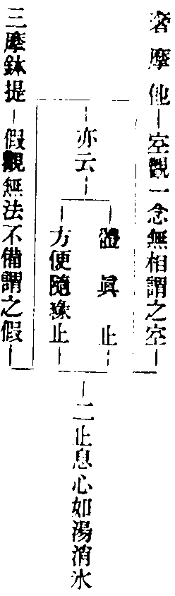
若諸菩薩。以靜慧故。證至靜性。便斷煩惱。永出生死。此菩薩者。名先修奢摩他後修禪那。
先以奢摩他之靜慧取證。故云先修。後以禪那斷煩惱而出生死。故云後修。
西蜀復庵暉禪師曰。二湛海澄空觀。湛海則波瀾不動。先靜觀以反流。澄空則水性清明。後寂觀以顯性。若諸菩薩以靜慧故。靜也。證至靜性。性即寂也。躡靜而兼修寂矣。便斷煩惱永出生死。二觀功用斷煩惱。是因亡。出生死。是果喪。此菩薩者名先修奢摩他後修禪那。此結名。是先修及後修第二輪也。
四明聰講師曰。五雙修。先空後中。只將靜慧兩字分止觀。靜者止也。慧者觀也。止觀愈進。斷煩惱出生死。
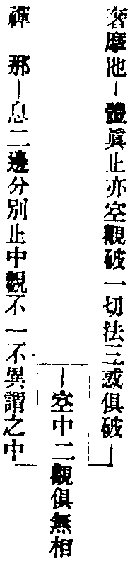
若諸菩薩。以寂靜慧。復現幻力種種變化。度諸眾生。後斷煩惱而入寂滅。此菩薩者。名先修奢摩他中修三摩鉢提後修禪那。
先有奢摩他之靜慧。故云先修。中現三摩鉢提之幻力。故云中修。後入禪那寂滅。故云後修。
西蜀復菴暉禪師曰。三首羅三目觀也。此三觀俱修。如摩醯首羅面上三目。若諸菩薩以寂靜慧。靜也。復現幻力種種變化度諸眾生。幻也。復斷煩惱而入寂滅。寂也。此菩薩者名先修奢摩他中修三摩鉢提後修禪那。結名。此是先修中修後修一輪。
四明聰講師曰。六具足修。先空中假後中。此聖先以空觀。治其內病。復用假觀。利物度生。後斷煩惱證寂滅。中觀也。
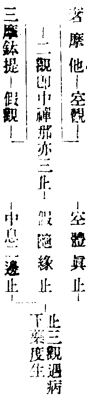
若諸菩薩。以至靜力。斷煩惱已。後起菩薩清淨妙行。度諸眾生。此菩薩者。名先修奢摩他。中修禪那。後修三摩鉢提。
先有奢摩他之靜力。故云先修。中以禪那斷盡煩惱。故云中修。後起三摩鉢提之妙行。故云後修。
西蜀復庵暉禪師曰。四三點齊修觀也。三點者。梵書伊字∴也。慤疏曰。一人具修三觀。即名齊。非是同時。若諸菩薩以至靜力。靜也。斷煩惱已。寂也。後起菩薩清淨妙行度諸眾生。幻也。煩惱既盡。愛見已亡。故所起行無不淨妙。可解他縛。此菩薩者。是先修中修後修第二輪也。
四明聰講師曰。七具足修。先空中中後假。此聖空觀。體真止。猛勇力強。頓斷煩惱。即生死結根斷已。復用中假二觀度生。即隨緣息二邊分別二止。共成佛界。
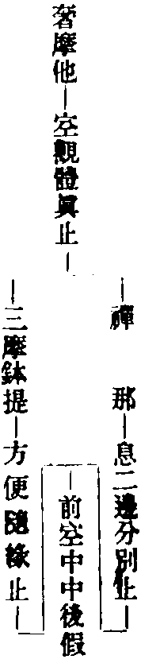
若諸菩薩。以至靜力。心斷煩惱。復度眾生。建立世界。此菩薩者。名先修奢摩他。齊修三摩鉢提禪那。
先有奢摩之靜力。故云先修。於禪那斷滅煩惱時。就起三摩鉢提之幻行。建立世界。故云齊修。
西蜀復菴暉禪師曰。五品字單雙觀也。上單靜觀。如上一口。後雙明寂幻。如下兩口。故云單雙。若諸菩薩以至靜力。靜也。心斷煩惱復度眾生建立世界。此菩薩者名先修奢摩他齊修三摩鉢提禪那。此乃齊兼幻寂也。初句是靜。後二句是幻。寂也。此是先修齊後第一輪也。
四明聰講師曰。八具足修。先修空齊修假中。此聖空觀力強。以圓覺妙心。頓斷煩惱。於一念中普度有情。一吹大千世界即成。功用如是。故云建立境界也。
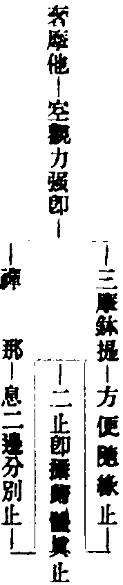
若諸菩薩。以至靜力。資發變化。後斷煩惱。此菩薩者。名齊修奢摩他三摩鉢提。後修禪那。
先以奢摩他之靜力。助發三摩鉢提之變化。故云齊修。後以禪那斷除煩惱。故云後修。
西蜀復庵暉禪師曰。六雙頭獨足觀也。白澤圖中。有山精。頭如皷有兩面。前後俱見。此喻靜幻雙照。二利齊運。如雙頭也。單寂觀如獨足也。若諸菩薩以至靜力資發變化。齊標靜幻。以至靜力。資助策發變化之力。以度眾生也。後斷煩惱此菩薩者名齊修奢摩他三摩鉢提後修禪那者。此寂也。前二利備故入中道。此段與前段經文異。前則靜獨為初。後始單修於寂也。此則靜與幻齊為初。後始兼修幻寂也。欲易見者。前則上單下雙。此則上雙下單。此是齊修後修第二輪也。
四明聰講師曰。九具足修。齊修空假後修中。以至靜。體真止。亦云空觀力強。復兼假觀。方便隨緣。故云資發變化。以中為體。復修禪那破無明惑。
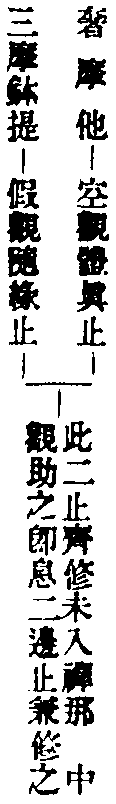
若諸菩薩。以至靜力。用資寂滅。後起作用。變化世界。此菩薩者。名齊修奢摩他禪那後修三摩鉢提。
先以奢摩他之靜力。資助禪那之寂滅。故云齊修。後起三摩鉢提之作用。變化世界。故云後修。
西蜀復庵暉禪師曰。七菓落花敷觀。既以靜定之樹。結寂滅中道果。後花敷者。復以幻觀。入有情界。度諸眾生。同令獲得涅槃之果。若諸菩薩以至靜力用資寂滅。齊滅也。後起作用變化世界。此菩薩者名齊修奢摩他禪那後修三摩鉢提。兼幻也。此是齊修第三輪也。
四明聰講師曰。十具足修。齊修空中後修假。以至靜。體真止。亦云空觀力強。以中觀。潤之。用資寂滅。後以假觀。變化現前。世者。世有方位。界者。界有界分。且如釋迦。於娑婆有緣。來此隨方度生。
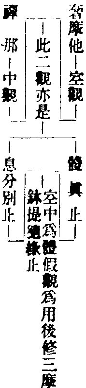
若諸菩薩。以變化力。種種隨順而取至靜。此菩薩者。名先修三摩鉢提。後修奢摩他。
先以三摩鉢提之幻力隨順。故云先修。後取奢摩他之至靜。故云後修。
西蜀復庵暉禪師曰。今初先武後文觀也。謂武王先興兵收伐紂王之後。倒載干戈。歸馬於華山之陽。放牛於桃林之野。鑄戈戟為農器。偃武修文也。喻此菩薩先變化種種隨順度脫眾生已。後入靜觀。若諸菩薩以變化力種種隨順。此標幻。而取至靜此菩薩者名先修三摩鉢提後修奢摩他。靜也。此是先後第一輪也。
四明聰講師曰。十一雙修。先假後空。(從此後七觀用假在前)此先用變力度生。隨所度處。觀空入滅。
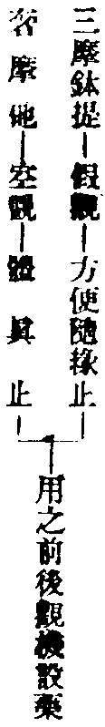
若諸菩薩。以變化力。種種境界。而取寂滅。此菩薩者。名先修三摩鉢提。後修禪那。
西蜀復庵暉禪師曰。二功成退職觀也。此喻。如秀才及第之後。於朝廷立大功。成大名。至於功成名遂。身退拂衣歸閒。依前只是舊時秀才也。喻菩薩發惠利物度生畢。即是功成。習寂內修名為退職。若諸菩薩以變化力種種境界。此幻也。而取寂滅此菩薩者名先修三摩鉢提後修禪那。兼寂也。此是先後第二輪也。
四明聰講師曰。十二雙修先假後中。此先用假觀。出建立假。故曰種種境界。然後入真空涅槃。故曰而寂滅。居中道觀。
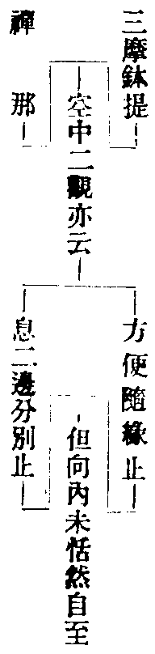
若諸菩薩。以變化力而作佛事。安住寂靜。而斷煩惱。此菩薩者。名先修三摩鉢提。中修奢摩他。後修禪那。
先以三摩鉢提之幻力而作佛事。故云先修。中則安住奢摩他之寂靜。故云中修。後以禪那寂滅之道。斷除煩惱。故云後修。
西蜀復庵暉禪師曰。三幻師解術觀。謂先起變化作術法。後歸靜體寂。故曰解術幻靜。此是先中後一輪也。
四明聰講師曰。十三具足修。先假中空後中。以變化力而作佛事者。此聖流出假化物。如傅大士。示迹於婺州雙林。有妻有子。種田作世間事。若以俗眼觀之而自愧。以道眼觀之。無非佛事。
安住寂靜者。彌勒兜率內院常說妙法。身在人間。而內院不動。古云。顛狂彌勒到明州。布袋橫桃柱杖頭。饒汝化身千百億。一身還有一身愁。
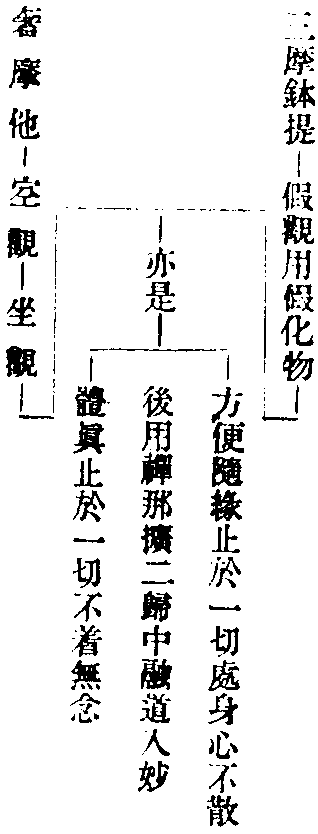
若諸菩薩。以變化力。無礙作用。斷煩惱故。安住至靜。此菩薩者。名先修三摩鉢提。中修禪那。後修奢摩他。
先以三摩鉢提之幻力無礙作用。故云先修。中以禪那寂滅之道斷除煩惱。故云中修。後則安住於奢摩他之至靜。故云後修。
西蜀復庵暉禪師曰。四神龍隱海觀。謂起幻化生。如神龍布雲也。歸體入靜。如隱海也。此先中後第二輪也。
四明聰講師曰。十四具足修先假中中後空。此菩薩。先用假化度眾生。皆以變化無礙作用。如持地菩薩常居渡船處。入水與人搬擔。種種作務。唯取一錢。豈不至靜而取佛道。
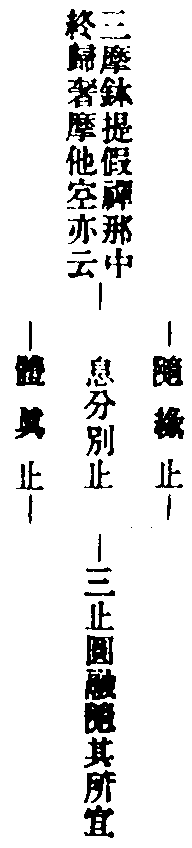
若諸菩薩。以變化力。方便作用。至靜寂滅二俱隨順。此菩薩者。名先修三摩鉢提。齊修奢摩他禪那。
先以三摩鉢提之幻力。方便作用。故云先修。後則奢他之至靜。及禪那之寂滅。悉皆隨順修習。故云齊修。
西蜀復庵暉復禪師曰。五龍樹通真觀也。謂先起幻後歸寂。如龍樹初行幻術。廣化邪途。後習真乘。自階聖果。其名龍樹者。傳鐙云。西印度城北有大樹。蔭覆五百大龍。其樹王名龍樹。常為眾說法。初入佛道之時。九十日念。盡如來一代時教。遂高聲唱言。孰謂如來言教廣博。遂入龍宮。誦出下本華嚴十萬餘偈。今現傳於世者也。此先齊第一輪也。
四明聰講師曰。十五具足修。先修假齊修空中。以變化力并方便。正是止名。方便隨緣止即假觀。假觀為先鋒。空中為中軍。故云至靜寂滅。空中觀。即體真息二邊為止。二俱隨順也。
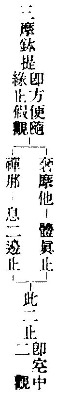
若諸菩薩。以變化力。種種起用。資於至靜。後斷煩惱。此菩薩者。名齊修三摩鉢提奢摩他。後修禪那。
先以三摩鉢提之幻力。種種起用。資於奢摩他之至靜。故云齊修。後以禪那寂滅之道。斷除煩惱。故云後修。
西蜀復菴暉禪師曰。六商那示相觀也。商那和修。即優波毱多之師也。先以神力示相。降伏毱多弟子慢心。後乃入定歸寂。此是齊後第二輪也。
四明聰講師曰。十六具足修。齊修假空後修中。先假觀空觀二觀。皆依中道而起。種種變化至靜空也。
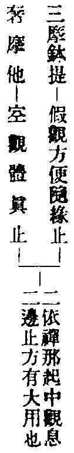
若諸菩薩。以變化力。資於寂滅。後住清淨無作靜慮。此菩薩者。名齊修三摩鉢提禪那。後修奢摩他。
先以三摩鉢提之幻力。資於禪那之寂滅。故云齊修。後以奢摩他。安住清淨不起靜念。故云後修。
西蜀暉禪師曰。七大通宴默觀也。大通如來即佛也。先用利物。後則歸寂。此齊後第三輪也。後七輪。一一標寂為首。次兼餘二。
四明聰講師曰。十七具足修。齊修假中後修空。變化用。假觀。資於寂滅。中觀也。無作靜慮。空觀也。假中即是體用也。復入空。復入靜慮。可謂坐籌惟幄。有決勝千里之功。
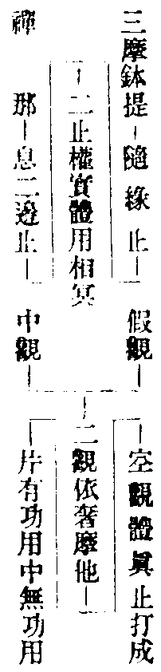
若諸菩薩。以寂滅力。而起至靜住於清淨。此菩薩者。名先修禪那。後修奢摩他。
先有禪那寂滅之力。故云先修。後起奢摩他之至靜。住於清淨。故云後修。
西蜀復庵暉禪師曰。今初寶明空海觀也。佛頂經云。同入如來寶明空海。今靈心觀。即本覺明。如寶明也。後靜觀。如空海也。又寶明即慧。空海即修。此是先後第一輪也。
四明聰講師曰。十八雙修。先中後空。(此去七觀用中在前)此聖用中道。即圓覺一性也。此性不守。發而為靜為空。破一切相。蕩一切法。凡起修。以此觀照之。立一切法。無法不足。
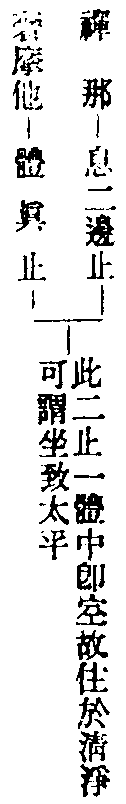
若諸菩薩。以寂滅力。而起作用。於一切境。寂用隨順。此菩薩者。名先修禪那。後修三摩鉢提。
先有禪那寂滅之力。故云先修。後起三摩鉢提之作用。隨順一切。故云後修。
西蜀復庵暉禪師曰。二虗空妙用觀也。謂靈心之體如虗空。起化即妙用。此先後第二輪也。
四明聰講師曰。十九雙修。先中後假。此聖用中道寂滅理上而用假。故云而起作用。於一切境用中道照之。故云寂用隨順。辦一切事。無事不辦。
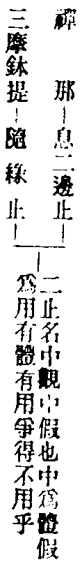
若諸菩薩。以寂滅力種種自性。安於靜慮。即起變化。此菩薩者。名先修禪那。中修奢摩他。後修三摩鉢提。
先以禪那寂滅之力。故云先修。中則種種自性。安於奢摩他之靜慮。故云中修。後則起三摩鉢提之變化。故云後修。
西蜀復庵暉禪師曰。三舜若呈神觀也。出楞嚴經。舜若即虗空神。遇日光映之暫現。如修此觀。先寂。次靜。後幻。此先中後第一輪也。
四明聰講師曰。二十具足修。先中中空後假。此從中道第一義諦。起種種自性差別。亦用空觀發用。如火得空則明。水得空則瑩。變化萬端。攝化一切。即假觀之力。
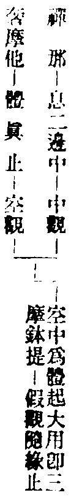
若諸菩薩。以寂滅力。無作自性起於作用。清淨境界歸於靜慮。此菩薩者。名先修禪那。中修三摩鉢提後修奢摩他。
先有禪那寂滅之力。故云先修。中則不動自性。起三摩鉢提之作用。故云中修。後則清淨境界歸於奢摩他之靜慮。故云後修。
西蜀復庵暉禪師曰。四飲光歸定觀也。即大迦葉。亦云大龜氏。昔為金師。善明金性。使其柔伏。以金塗佛。感得金色。此觀先證神通。後乃歸定也。此先中後第二輪也。
四明聰講師曰。二十一具足修。先中中假後空。此聖用中觀絕待為義。妙一切法。無越於中。只常智無緣。無緣而緣。無緣大悲。謂之無作自性。雖起作用。終歸於空。作用假也。如鍾在架扣之則鳴。鍾者中道觀也鍾內中空。空觀也。扣之鳴。假觀。中空假三觀。發用也。如此。
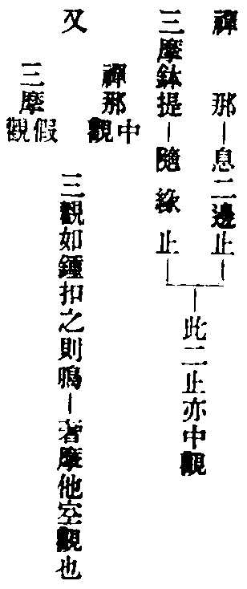
若諸菩薩。以寂滅力。種種清淨而住靜慮。起於變化。此菩薩者。名先修禪那。齊修奢摩他三摩鉢提。
先有禪那寂滅之力。故云先修。彼則住於奢摩他之靜慮。而起三摩鉢提之變化。故云齊修。
西蜀復菴暉禪師曰。五多寶呈通觀也。以多寶佛先成道證真如體。後於塔中發起。出法華經中。如靜幻無礙。此是先齊第一輪也。
四明聰講師曰。二十二具足修。先中齊修空假。先修中觀。即秘藏。包容種種諸法。於諸法中常照而寂。亦寂而照。故云起於變化。名不虗得。
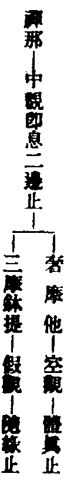
若諸菩薩。以寂滅力資於至靜。而起變化。此菩薩者。名齊修禪那奢摩他。後修三摩鉢提。
先以禪那寂滅之力。資於奢摩他之至靜。故云齊修。後起三摩鉢提之變化。故云後修。
西蜀復庵暉禪師曰。六下方騰化觀也。此下方騰化觀者。出法華。六萬恒沙菩薩從下方現。此是齊後第二輪也。
四明聰講師曰。二十三具足修齊修中空後修假。此聖用中道寂滅力。資於至靜。中道如水。至靜如清。而起變化如水上波。波亦無窮。浪亦無盡。其假也如是。
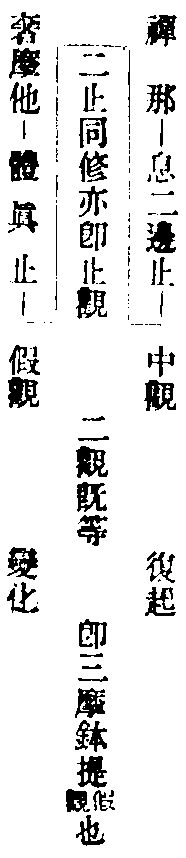
若諸菩薩。以寂滅力資於變化。而起至靜清明境慧。此菩薩者。名齊修禪那三摩鉢提。後修奢摩他。
先以禪那寂滅之力。資於三摩鉢提之變化。故云齊修。後起奢摩他之至靜。故云後修。清明境慧者。至靜之中。境智俱淨也。
西蜀復庵暉禪師曰。七帝青含變觀也。出華嚴偈云。譬如帝青寶。照物皆同色。眾生見佛時。同佛菩提色。此寶含諸物。像對即變應。應而還空。如靈心觀成。包含德用。應緣起幻。而復安靜。此是齊後第三輪也。後一輪圓修三觀。
四明聰講師曰。二十四具足修。齊修中假後修空。此聖流中道有力并假觀熏動。資於變化。至靜空觀。如太清天清而且明。安致是中。左右逢原。
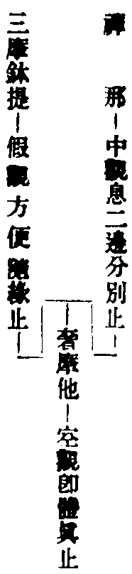
若諸菩薩。以圓覺慧。圓合一切。
以圓覺性中之智慧。圓攝一切法也。
於諸性相。無離覺性。
既是圓合一切。則於種種性相。皆不離圓覺妙性。
此菩薩者。名為圓修三種自性清淨隨順。
觀齊修是名圓覺。
西蜀復庵暉禪師曰。此名如意圓修觀。有如如意寶珠四方俱照。大智頓覺。三觀齊修。然如意珠世人得者。一切所欲皆如其意。應心所求。無不皆現。今圓修此亦復如是。於諸法中舉體相即無不同具。於諸性者。即靜觀。相字即幻觀。覺性即中道寂滅觀。以圓覺慧圓合一切者。此是從體起用。於諸性相無離覺性者。此是會歸體也。謂若菩薩。用廣大靈明圓覺之慧。圓融和合一切。或理或事。或性或相。或真或妄。或色或空。或本或末。種種諸法。舉體全真。以何義故。良由以覺合理。理即非理。故全即事。又由以覺合事。事即非事。故全即理。到此境界。全理全事。全性全相。全真全妄。全色全空。全本全末。全得全失。全彼全此。雙遮雙照。體用無二。寂照同時。是為圓融無上妙覺。此菩薩者下。皆結名也。
四明聰講師曰。二十五圓修三觀三止。此菩薩圓修三觀三止。以圓覺慧圓合一切者。圓覺即中道第一義諦。亦名常住真心。亦云性淨明體亦云本覺。亦云空如來藏。亦是法華經藏。修而顯之。具一切名。通一切法。在迷為惡。為愚。為癡。為三毒。為婬怒癡性。為殺。為盜。為邪見。為魔。為諸阿顛迦。為昏鈍性障。為性惡。具無量名。為之性惡法門也。今言為佛為圓覺。就修顯立名。為真諦。為俗諦。為真俗不二。為中道。為真諦者。即凡聖色聲因果等法。皆無自性。謂之性空。亦非研究而空。乃本來空也。是名空觀也。俗諦者。於性空中。具足諸法。無所不遍。自佗無礙。毫剎含容。亦即假觀本來具也。然此真俗不二無二也。混而為一。而未甞為一。離而為二。未甞二也。當知即中道觀也。此二諦觀即圓覺性。寂而照。照而寂。圓合一切。於諸性相者。性真諦也。相俗諦也。亦向真俗二諦。二諦即一。豈離覺性。以覺性遍在一切眾生心中。生即是佛也。以眾生心中覺性在佛。佛即眾生。生即是佛。佛即是生。生佛平等。覺性在地獄。地獄即佛。佛即地獄。其鬼畜生人天何莫由斯。於一切法上。用三觀照之。了之於身心。脫之見解。非今始悟。由本不迷。佛也生也一而已。
善男子。是名菩薩二十五輪。一切菩薩修行如是。
菩薩修行。不出此二十五輪。唐僧惟慤。以此二十五輪。為二十五觀。
四明聰講師曰。此二十五輪。本被機修證。若論機緣入道。若權若實。若偏若圓。有利有鈍。何止二十五。經中自云。若論菩薩。於一輪中。有若諸關涉多少。故不能窮理盡情也。
今括出二十五輪于后(御註中具出)。
一單修奢摩他。(專修靜觀)二單修三摩鉢提(專修幻觀)三單修禪那。(專修寂觀)四先修奢摩他。(至靜)後修三摩鉢提。(妙行)五先修奢摩他(靜慧)後修禪那。(斷煩惱出生死)六先修奢摩他。(靜慧)中修三摩鉢提。(幻力)後修禪那。(寂滅)七先修奢摩他。(靜力)中修禪那。(斷盡煩惱)後修三摩鉢提。(妙行)八先修奢摩他。(靜力)齊修三摩鉢提(幻行)禪那。(斷滅煩惱)九齊修奢摩他(靜力)三摩鉢提。(變化)後修禪那。(斷除煩惱)十齊修奢摩他(靜力)禪那。(寂滅)後修三摩鉢提。(作用變化世界)十一先修三摩鉢提。(幻力)後修奢摩他。(至靜)十二先修三摩鉢提。(幻力)後修禪那。(寂滅)十三先修三摩鉢提。(幻力)中修奢摩他。(寂靜)後修禪那。(寂滅)十四先修三摩鉢提。(幻力)中修禪那。(寂滅)後修奢摩他。(至靜)十五先修三摩鉢提。(幻力)齊修奢摩他(至靜)禪那。(寂滅)十六齊修三摩鉢提(幻力)奢摩他。(至靜)後修禪那。(寂滅)十七齊修三摩鉢提(幻力)禪那。(寂滅)後修奢摩他。(安住清淨)十八先修禪那。(寂滅)後修奢摩他。(至靜)十九先修禪那。(寂滅)後修三摩鉢提。(作用隨順一切)二十先修禪那。(寂滅)中修奢摩他。(靜慮)後修三摩鉢提。(變化)二十一先修禪那。(寂滅)中修三摩鉢提。(作用)後修奢摩他。(靜慮)二十二先修禪那。(寂滅)齊修奢摩他(靜慮)三摩鉢提。(變化)二十三齊修禪那(寂滅)奢摩他。(至靜)後修三摩鉢提。(變化)二十四齊修禪那(寂滅)三摩鉢提。(變化)後修奢摩他。(至靜)二十五圓修三種自性清淨隨順。
持梵行者。持佛戒行也。寂靜者。自澄其心也。思惟者。審察邪正也。
求哀懺悔。經三七日。
於二十五輪。各安標記。至心求哀。隨手結取。
如探籌然。不可揀擇。
依結開示。便知頓漸。
結得前單修三輪。及圓修一輪。即是頓門。結得餘二十一輪。即是漸門。
一念疑悔。即不成就。
苟有疑悔之心。觀行終不成就。
西蜀復庵暉禪師曰。此總示修習。梵行淨也。此即戒學。寂靜者。此即定學。思惟即慧學。此是三無漏學也。大凡學道之人。莫不皆因三學。而從凡入聖。有如莊子云。泰字定發乎天光。與此同旨。謂修此二十五輪之時。於事相中。威儀法式及用心方便。必須持戒防非止惡。入定對治動亂。發慧辨別邪正是非真妄等法。如是修習必定成佛。倘若觀中有礙。宜須於三七日中求告哀投十方諸佛。懺露先罪。改往修來。書寫二十五輪名字文句。安置道場之中。禮念虔誠精祈一行。若是於三觀之中。已的樂修一觀者。即便隨意修習。更不必求。若心於猶豫不決。勝劣難分。即當憑仗聖力以卜之。不宜揀擇。但依所捻結開而看之。而頓漸自知。休貪別觀。若更懷疑則失前功。不可等閑輕於事相也。
四明聰講師曰。此示菩薩末世眾生。須依教修之。若不依輪次。終成虗設。梵行者。即不婬慾淨身業也。寂靜淨口業也。思惟淨意業也。三業清淨。隨智慧行。為之求哀懺悔。經三七日者。尅期也。二十一日中精進。謂之尅時。破障域意修真。二十五輪各安標記。至心求哀。此言凡夫淺識。觀力未著。須依事相。如假船過渡。用筏到岸。書二十五名於籤上。於佛前誠心禱之。乞求冥力加被。勿起少疑心。祈禱懺悔已。至於三七日。誠心深固。為之即非造次。然後信手抽籤。不宜揀擇。依結開示。或頓或漸。依教修行。若自的樂一門。隨便修習。既勝劣難分。不能自決。故憑聖力。以卜應修。當即依結以修。無得復貪餘觀。若單修一輪。并圓修三觀者。此名為頓。若兼修互修者。此名為漸。此漸非漸教之漸。此則同以圓覺發觀之始。同緣實相。同以上品寂。先為觀體。但根有利鈍。證有先後。為之漸也。不問遲鈍聰利。但心懷疑悔。即不成就也。
爾時世尊。欲重宣此義。而說偈言。
辨音汝當知 一切諸菩薩 無礙清淨慧
皆依禪定生 所謂奢摩他 三摩提禪那
三法頓漸修 有二十五種 十方諸如來
三世修行者 無不因此法 而得成菩提
唯除頓覺人 并法不隨順 一切諸菩薩
及末世眾生 常當持此輪 隨順勤修習
依佛大悲力 不久證涅槃
西蜀復庵暉禪師曰。偈中二偈。標意及觀綱也。次一偈結因。後二偈揀示。云唯除頓覺人。并法不隨順。此二句長行既無。此偈即顯謂獨除却上根圓頓悟解之人。并及於一切定相之法不隨順者。則不必依二十五輪。及道場探結等法。不隨順者。不取相也。既不隨相。即隨真覺。此乃頓入圓明。觸目合道。遇緣即宗。本自無傷。不可加之以繩索也。是知前普賢章。知幻即離不作方便等類。故揀之矣。又下文云隨順勤修習者。此指下根人。前不隨即不隨倒法。此不隨即不隨正法。若下根之人。其可不隨正法乎。後六句總示也。
四明聰講師曰。偈與長行無異義也。有唯除頓覺人并法不隨順二句。不免重釋。圭峰云。唯除上根圓頓悟解之人。并及於一切定相之法不隨順者。則不必具依二十五輪。及道場探結等。不隨順法者不取相也。既不隨相。即隨真覺。此乃頓入圓明。觸目合道。不可加之以繩索。無瘡自疣也。是前知幻即離不作方便等類。故云唯除之矣。
釋迦老子性顛蹶 蜘蛛網撈水底月
辨音不解拈金彈 斷貫索繫天邊鴈
二十五輪更互修 得便宜處便垂鈎
錦鱗不在[糸*系]輪上 莫向烟波深處求
唐圭峰定慧禪師宗密頌辨音菩薩章曰。
辨音又問幾般輪 幾種脩持可證真
單複圓門雖有異 靜幻寂觀要區分
各安標記欲探結 先莫求哀悔罪根
二十五輪依幻覺 無修習處示修因
辨音菩薩章終八